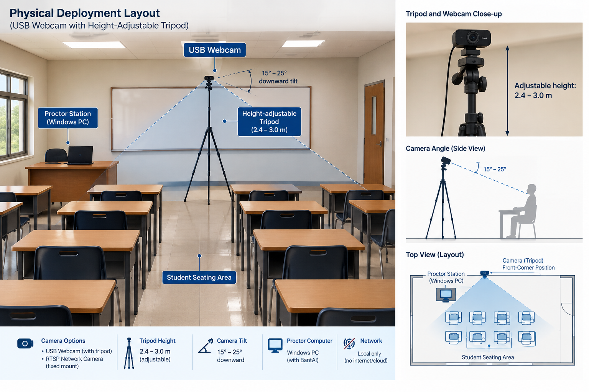
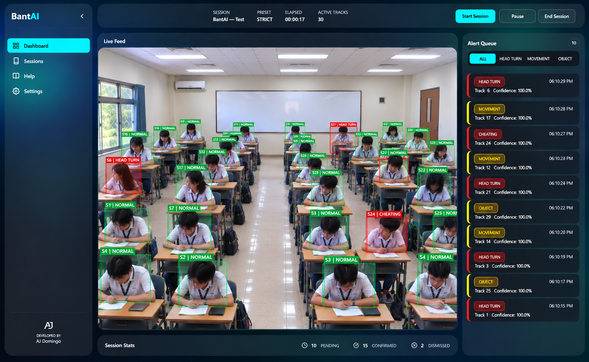
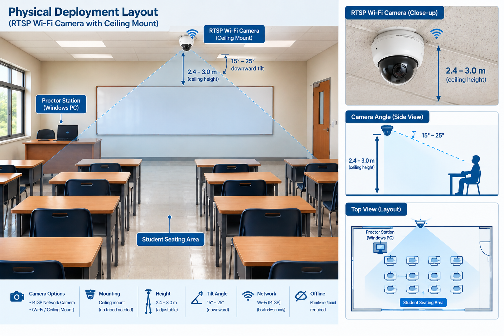

USB webcam on a tripod

- Camera
- A USB UVC webcam on a height adjustable tripod.
- Height
- 2.4 to 3.0 m.
- Tilt
- 15° to 25° downward.
- Quality
- Minimum 720p at 30 FPS over USB 2.0. Recommended 1080p over USB 3.0.
BantAI is an offline Windows app that watches a classroom camera feed and flags head turns, unusual movement and prohibited objects for a proctor to review. It never decides misconduct.
Students deserve to have their effort judged fairly.
Proctors deserve the tools to protect that fairness.
BantAI connects the two.
Because honest effort deserves honest recognition.

Live camera feed, a queue of flagged moments, and session status in one window.
The camera view, with detection boxes drawn on each tracked student.
Flagged moments wait here for review. Filter by head turn, movement or object.
Pending, confirmed and dismissed counts for the session.
Reads frames from a USB webcam or an RTSP IP camera on the local network.
A 720p USB webcam is the minimum. A 1080p camera, over USB 3.0 or RTSP, is recommended.
Frames are processed on the computer BantAI is installed on. Nothing is sent to a server.
Scans a downscaled full frame first, which keeps the first pass light.
When something is flagged, that region is checked again at full resolution with stricter logic, to reduce false positives.
It looks for head turns, unusual movement and prohibited objects. A flag only appears when a behaviour lasts long enough to meet the chosen sensitivity.
Saves a watermarked snapshot when a flag triggers. No continuous video is stored.
Each flag goes to the proctor console with its snapshot, marked pending until a person reviews it.
A short pause between snapshots stops one long behaviour from filling the queue with duplicates.
Always a person
A proctor confirms or dismisses each flag. BantAI applies no penalties.
Dismissals are logged with the proctor's ID and a timestamp. Deleting evidence needs an administrator and leaves an audit log entry.
A PDF Final Incident Report, with the embedded snapshots, can be exported. It carries a watermark and disclaimers.
BantAI flags a head turn only when it passes a set angle and stays there long enough. The angle is measured from where each student normally looks. Pick a sensitivity, drag the head, and see when a flag would appear.
The 3D head needs JavaScript to run.
Normal
The head is inside the angle, so nothing is counted.
Time beyond the angle0.0 s / 2.0 s
It shows how the angle and duration settings work. In BantAI, one continuous turn raises one flag, and a proctor reviews it.
BantAI runs on one Windows computer in the room and reads from a USB webcam or an RTSP IP camera. Here is how each one is set up.


Ordinary movements can raise false alerts. Students far from the camera or overlapping are harder to detect. Constrained hardware can affect detection. That is why a person reviews every flag.
No. BantAI runs offline on the computer it is installed on.
No continuous video is stored. It saves a watermarked snapshot when a flag triggers.
Not by itself. A flag appears only when a head turn or a movement passes the set size and lasts the set time, so a quick glance or a shift in the seat does not raise one.
A quick stretch is usually too short to count. A longer one can still meet the sensitivity and raise a flag, and the proctor decides what it means.
It is built to avoid that. One continuous behaviour raises one flag, and repeats of the same behaviour within 10 seconds update that flag instead of adding a new one.
Yes. It can raise false alerts. That is why a person reviews every flag.
BantAI flags moments for review. A proctor looks at each one and makes the decision. Nothing is penalised automatically.
Get the Windows app